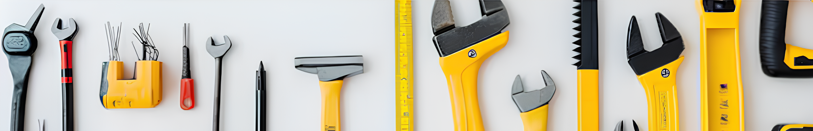
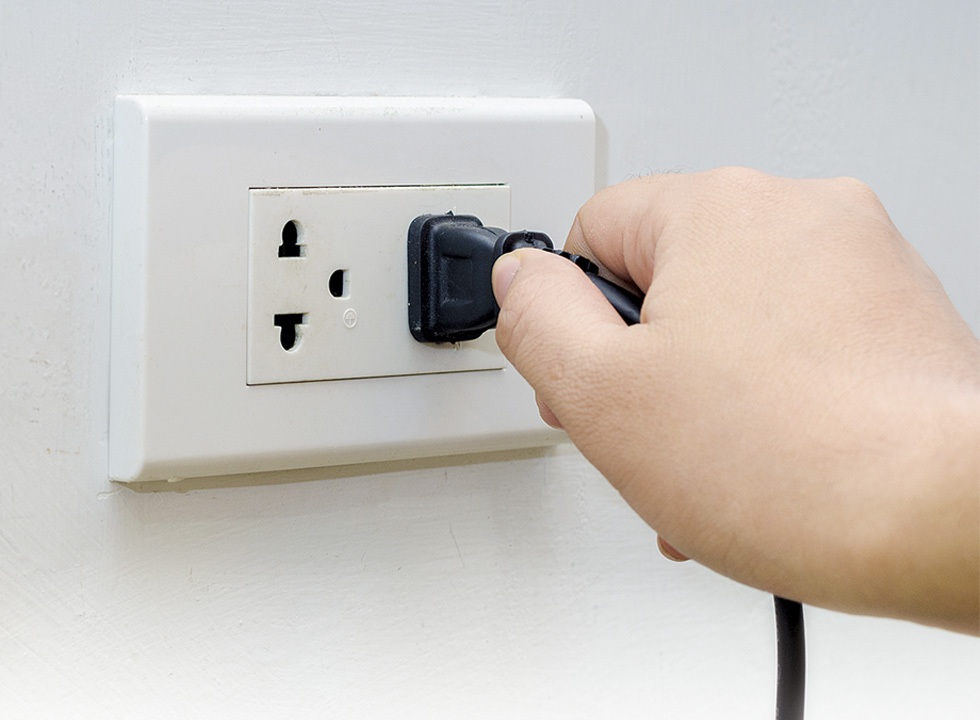
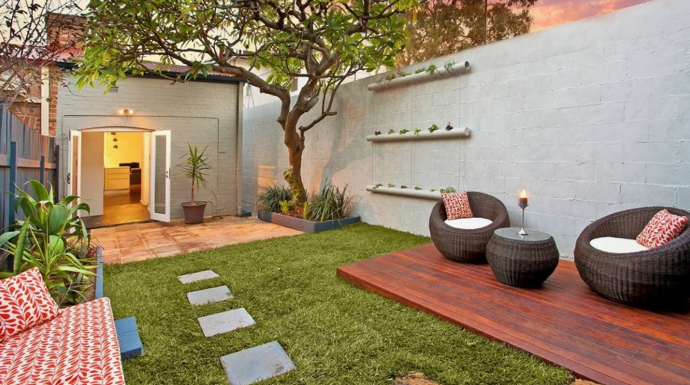
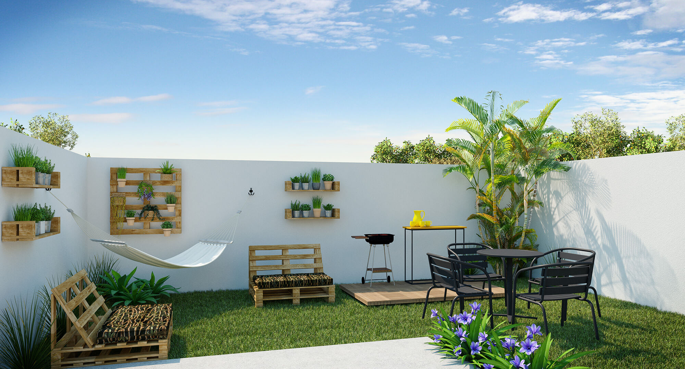
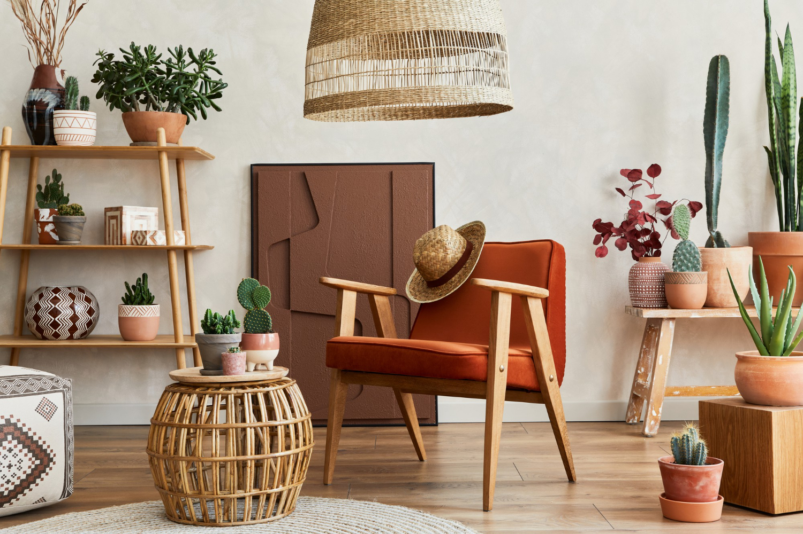

Manutenção
Bem-vinda ao espaço dedicado a Manutenção e atividades presentes no nosso cotidiano.
Aqui vamos te ensinar e te dar dicas para manter a sua casa sempre atualizada e organizada, tornando a sua vida e seu relacionamento com o seu lar mais fácil.
Alguns videos para ajudar
Manutenção em Casa
A manutenção em casa é uma tarefa essencial para manter o lar organizado, limpo e seguro. Como mulher, você provavelmente é a principal responsável por garantir que tudo esteja em ordem. Aqui estão algumas dicas práticas para ajudá-la a manter sua casa perfeita!
Rotina Diária
Estabelecer uma rotina diária é fundamental para manter sua vida mais prática e organizada! Veja algumas dicas para criar uma rotina eficaz!
1 - Identifique suas prioridades;
2 - Crie um cronograma;
3 - Divida suas tarefas;
4 - Seja mais flexível.
5 - Comece com simplicidade;
Elétrica
Sabe quando quebra uma tomada, queima uma lâmpada, um chuveiro, ou você quer instalar um interruptor novo mas não sabe como? Esses pequenos imprevistos no dia a dia podem ser um verdadeiro desafio, e muitas vezes ficamos na dúvida se devemos chamar um profissional ou tentar resolver por conta própria.
Aqui entendemos a importância de ter a casa funcionando perfeitamente, e por isso, oferecemos dicas, tutoriais e soluções práticas para que você possa lidar com esses problemas de forma rápida e segura. Seja você uma iniciante ou que já tem alguma experiência com reparos elétricos, temos o conteúdo ideal para te ajudar a enfrentar qualquer situação!
A prevenção é o primeiro passo para manter sua casa segura. Por isso, reunimos algumas dicas essenciais para proteger a parte elétrica de sua residência:
1 - Instale Disjuntores e Fusíveis
Os disjuntores são dispositivos de segurança que desarmam o circuito elétrico automaticamente em caso de sobrecarga ou curto-circuito. Certifique-se de que sua casa tem disjuntores instalados corretamente e que estão dimensionados para a potência dos aparelhos em cada circuito. Nunca sobrecarregue as tomadas ou extensões!

2 - Proteja as Tomadas e Fiações
Verifique regularmente as tomadas, interruptores e fiações da sua casa. Se você notar fios expostos, isolamentos danificados ou tomadas com sinais de superaquecimento, substitua-os imediatamente. Além disso, sempre use adaptadores e extensões de qualidade para evitar o risco de aquecimento excessivo.
Você é uma daquelas pessoas que tem planos de dedicar menos do seu tempo a limpeza de casa, mas não sabe como? Confira as 5 dicas para deixar sua casa limpa em menos tempo com o material de limpeza certo:

1. Passe vassoura nos cômodos todos os dias. Quanto maior a frequência na limpeza do piso, menos tempo você precisará no dia da faxina.
2. Não deixe louça acumulada em cima da pia e lave-as sempre que usar. Dessa forma você consegue manter uma organização na cozinha.
3. Não permita que os alimentos fiquem soltos na geladeira. Reserve-os em vasilhas de plástico com tampa. Não esqueça também de checar a validade dos demais produtos
4. Para evitar o armazenamento de mantimentos vencidos, eles podem deixar mau cheiro no ambiente.
5. Tenha o hábito de realizar as refeições na cozinha. Isso vai ajudar a manter a limpeza dos outros cômodos da casa.
Manutenção de Espaços Externos
A área externa de uma casa desempenha um papel crucial na primeira impressão que ela transmite, além de ser um espaço para relaxar, receber amigos e familiares, e desfrutar da natureza. No entanto, manter essa área limpa e organizada pode ser desafiador, especialmente com as mudanças sazonais e o desgaste causado pelo clima. Veja estratégias eficazes para manter a área externa da casa limpa e organizada durante todo o ano, garantindo um ambiente convidativo e agradável para todos:


1. Para manter a área externa da sua casa limpa e organizada, comece criando um plano de limpeza e manutenção.
2. Identifique as tarefas necessárias, incluindo varreção, limpeza de superfícies, corte da grama e poda de plantas, e estabeleça uma rotina regular.
3. Mantenha a grama aparada e as plantas devidamente cortadas, já que isso não só embeleza o espaço, mas também ajuda a evitar pragas.
4. Limpe com frequência as superfícies externas, como calçadas e pátios, usando uma mangueira ou escova.
5. Organize a área de estar ao ar livre, guardando móveis e acessórios quando não estiverem em uso para preservá-los e manter a área agradável.
6. Manter uma área externa limpa e organizada é fundamental para a segurança e a estética.
7. Varrer regularmente, remover detritos e garantir a iluminação adequada são essenciais.
8. A implementação de soluções eficazes de armazenamento, como ferramentas de jardim e iluminação externa, também pode ajudar.
9. Investir em iluminação solar ou de baixa tensão também pode aumentar a segurança externa.
10. Criar uma área de compostagem pode ajudar a reduzir o desespero e fornecer nutrientes naturais para as plantas.
A decoração é muito mais do que apenas estética. Ela é uma forma de expressar personalidade, criar conforto e transformar ambientes em espaços únicos e funcionais. Seja para renovar um cantinho da casa ou repaginar todo um ambiente, a decoração harmoniza elementos como cores, móveis, iluminação e acessórios para refletir quem você é e atender às suas necessidades. Veja um pouco sobre:

1. Estilo: Escolha um estilo que reflita sua personalidade, como minimalista, industrial ou boho. Mantenha a coerência nos móveis e nos acabamentos para um visual harmônico.
2. Cores: Opte por uma paleta equilibrada. Tons neutros trazem calma, enquanto cores vibrantes adicionam energia. Use contrastes para criar interesse visual.
3. Iluminação: Invista em luz natural e complemente com luminárias de diferentes intensidades. Luzes quentes criam aconchego, enquanto as frias são ideais para trabalho.
4. Texturas: Combine materiais como madeira, metal, tecidos e plantas para adicionar profundidade e conforto ao ambiente.
5. Acessórios: Almofadas, quadros, tapetes e objetos decorativos personalizam o espaço. Use-os para destacar sua paleta e estilo, sem exageros.
Reformar é mais do que apenas modificar um ambiente, é a oportunidade de renovar sonhos, melhorar o conforto e adaptar espaços às suas necessidades. Seja para modernizar a estrutura, otimizar a funcionalidade ou dar um toque especial de personalidade, uma reforma pode transformar completamente a atmosfera de um local. Com planejamento, escolhas assertivas e um olhar atento aos detalhes, o processo de reforma se torna uma jornada de transformação que valoriza seu imóvel e melhora sua qualidade de vida.
1. Planejamento: Defina suas prioridades, estabeleça um orçamento e cronograma realista. Um projeto bem estruturado evita surpresas e gastos desnecessários.
2. Escolha de Materiais: Invista em materiais de qualidade que combinam durabilidade e estilo. Considere também opções sustentáveis para um toque ecológico.
3. Iluminação Natural: Aproveite ao máximo a luz natural, ampliando janelas ou instalando claraboias. Isso melhora o conforto e reduz o consumo de energia.
4. Espaços Multifuncionais: Crie ambientes que possam ser usados de diferentes formas, como salas integradas ou móveis planejados, otimizando cada metro quadrado.
Chegamos ao fim da página!
Agradecemos por acompanhar nossas dicas e orientações para uma casa mais segura e livre de emprevistos!
Dúvidas? Sugestões? Feedbacks? Escreva para nós aqui embaixo que responderemos no seu e-mail!